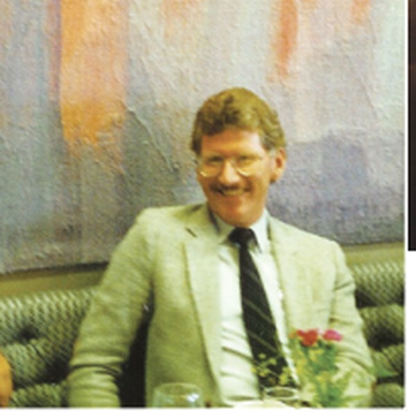
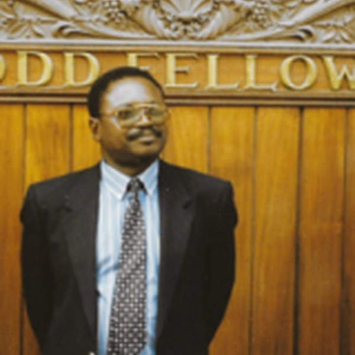
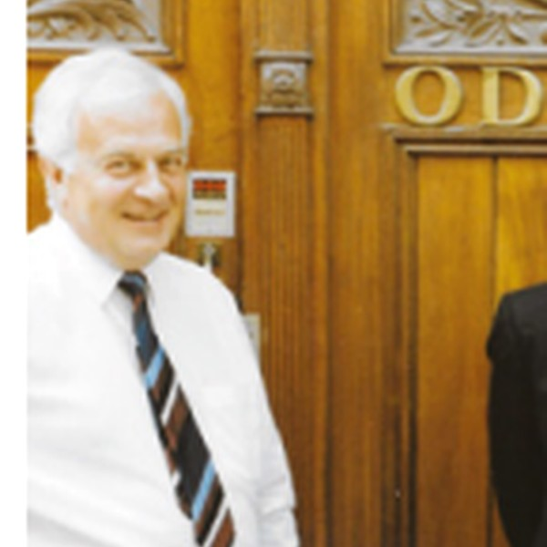
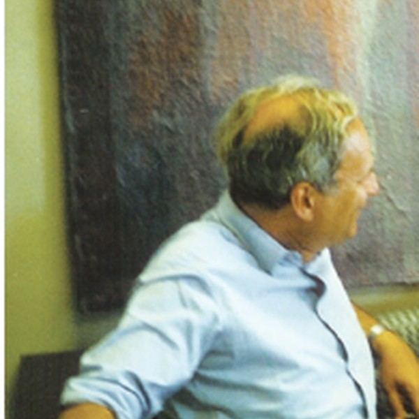
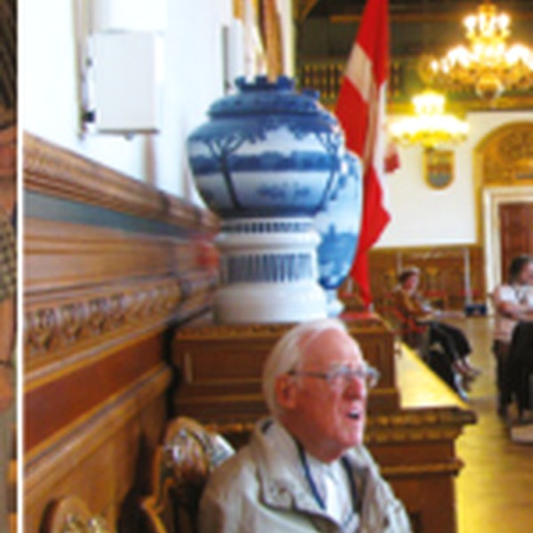
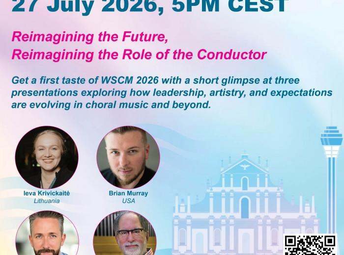

Public reference
Emily Kuo Vong
China · Macau
Shown as an example of how public leadership information could appear in a future archive.Independent future concept prototype
A personal vision prototype imagining how a global choral digital community could discover, connect, learn, participate and build what comes next.
This independent prototype explores one possible future for a digital global choral community.
It is not a redesign commissioned by IFCM.
It is a personal contribution created during the 2026 IFCM Presidential campaign to encourage discussion and innovation.
Vision
This prototype asks how a worldwide choral network could feel more useful, more participatory and more alive online.
Historical and institutional information should be checked directly on the official IFCM website. Here, official references are used only as external sources while the design, structure and service ideas remain an independent proposal.
Open official IFCM website ↗Public leadership references
This prototype shows how public leadership references could be presented visually. Dates and official roles should always be verified on official IFCM sources.
China · Macau
Shown as an example of how public leadership information could appear in a future archive.
United States
Included as a public reference; official chronology should be checked at source.
Mozambique
Included to demonstrate the archive concept, not to act as an official record.Venezuela
Presented as part of a discussion prototype based on public references.
Sweden
Displayed as an example item in a possible digital memory section.
France
Included as a public reference for visual demonstration purposes.United States
Shown to illustrate how public leadership memory could be navigated.
Germany
Displayed as a public reference; official details belong on official sources.This section is a visual concept only. It is not an official IFCM record. Verify leadership history and institutional information through official IFCM publications and pages.
Open official IFCM website ↗A living global network
Four practical commitments imagined for a future digital choral community: more useful, more representative and more connected.
One personal dashboard for opportunities, events, peer exchange, recordings and resources — tailored to each member's interests and region.
Regional councils with a direct route into decision-making, translation, programming and visibility across the whole community.
A global learning platform where conductors, composers, singers, managers and researchers can teach, discover and collaborate.
Clear priorities, accessible budgets, visible decisions and regular reporting — making members partners in the future direction of the community.
Public choral references
This section imagines how public choral references could become a living, searchable global directory. Official programme details should always be checked on the official IFCM website.
Symposium idea
The symposium area is presented as a concept for making major international choral gatherings easier to discover before, during and after each edition. For official dates, programmes and history, use the official IFCM project page.
Global choral calendar
International festivals, competitions and learning opportunities gathered into one worldwide calendar concept. Select an event to preview how information could open inside a future platform.
23–28 June 2026
Prototype global calendar: public international listings shown as a concept. In production, every event would carry an editorial status, organiser contact and last-verification date.
Global choral directory
This public prototype begins with public organisations, projects and choirs as examples. Protected member information would only appear with permission and proper authorisation.
Future membership services
Every member can be an ambassador. This prototype imagines membership as a useful digital service: people, opportunities, knowledge, recordings and participation in one place.
View official membership information ↗Online Cafés, recordings, the ICM archive and multilingual resources.
Members Database, international contacts and the World Choral Census.
Global projects, open calls and voting rights according to membership category.
Directory listing, news opportunities and international event promotion.
In a future production platform, fees and eligibility would be calculated from official rules before secure online payment.
“Do for them what you wish someone had done for you.”
Imagine offering a young person, choir or organisation a three-year membership pathway. One invitation can become a first international connection, a mentor, a project or the beginning of a lifetime in choral music.
The recipient would be contacted only with consent. Fees and eligibility would need to be confirmed through the official membership process.Listen, watch, follow
A clear home for performances, interviews, Online Café recordings, podcasts and learning resources. Members can save favourites and continue where they stopped.

▶Member Home
A glimpse of what a logged-in member could experience: relevant information, real people and useful actions in one calm space.
Become a Partner
Millions of people sing together, yet the world still lacks one trusted and comparable picture of choral participation. This concept imagines partners helping measure the world that sings — and turning knowledge into connection, access and action.
collective singers — 4.5% of the European population, gathered in around one million choirs and ensembles.
Singing Europe, 2015 / revisited 2024 ↗Americans singing together. This is a United States benchmark, not yet a complete continental total.
Chorus Impact Study, 2019 ↗No robust, comparable continent-wide total has yet been published. Help make every singing community visible.
Check official IFCM resources ↗Extraordinary choral activity, but no single verified continental participation figure yet.
Check official IFCM resources ↗A rich singing continent that deserves a shared, reliable and internationally visible data portrait.
Check official IFCM resources ↗National insights exist, but a comparable regional total still needs to be assembled and maintained.
Check official IFCM resources ↗Why the question marks? The published figures use different territories and methods. A responsible global platform should show what is verified, identify what is missing and invite partners to help close the gap.
Prototype advertising model
Organisations could request paid, clearly labelled placements in a future calendar, newsletter, member home and media areas. Every campaign would need transparent rules and editorial approval.
Join the conversation
Official information
For official institutional information, contacts, membership, projects and policies, please use the official IFCM website.
Open official IFCM website ↗Created by Myguel Santos e Castro as a personal vision for discussion during the 2026 IFCM Presidential campaign.
Read the prototype statement ↓These links leave the prototype and open official IFCM social channels in a new tab.
Official Facebook ↗Official Instagram ↗Official YouTube ↗